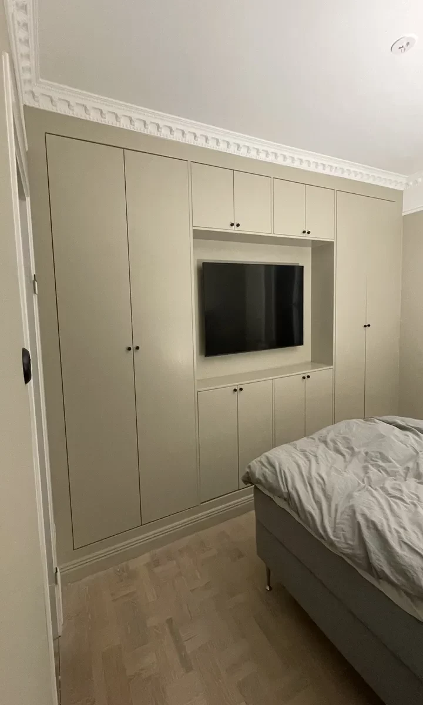

Köksrenovering i Stockholm
Ett kök som fungerar som du lever.
Vi hjälper dig med köksrenovering i Stockholm. Hör av dig så går vi igenom platsen och förutsättningarna för ditt projekt.
Offertförfrågan
Genomtänkt.
Hela vägen.
Vi utvecklar kökets layout, förvaring, material och detaljer tillsammans med dig. Det kan handla om en fullständig förnyelse eller utvalda förbättringar. Vi erbjuder designstöd och kan hjälpa till med inköp från leverantörer.
Vi planerar arbetet tillsammans, håller dig informerad och följer upp resultatet. Materialval, tid, kostnad och garantivillkor går vi igenom för ditt uppdrag.

Frågor om
köksrenovering.
Hur planeras tidsåtgången?
Omfattningen avgör. Mindre förändringar tar kortare tid än en totalrenovering; tidsramen diskuteras före start.
Hur väljer vi material?
Efter funktion, stil och budget, med hållbara och återvinningsbara alternativ när det går.
Kan ni utforma köket?
Ja. Vi hjälper till med layout och design utifrån vardag och önskemål.
Vem beställer inredningen?
Du behöver inte göra allt själv. Vi kan hjälpa med val och inköp av inredning och utrustning.
Vad gäller efter avslutat arbete?
Vi erbjuder garanti. Gå igenom villkoren för material och utförande i avtalet för just ditt projekt.